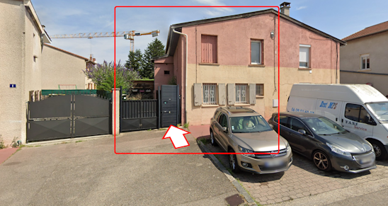
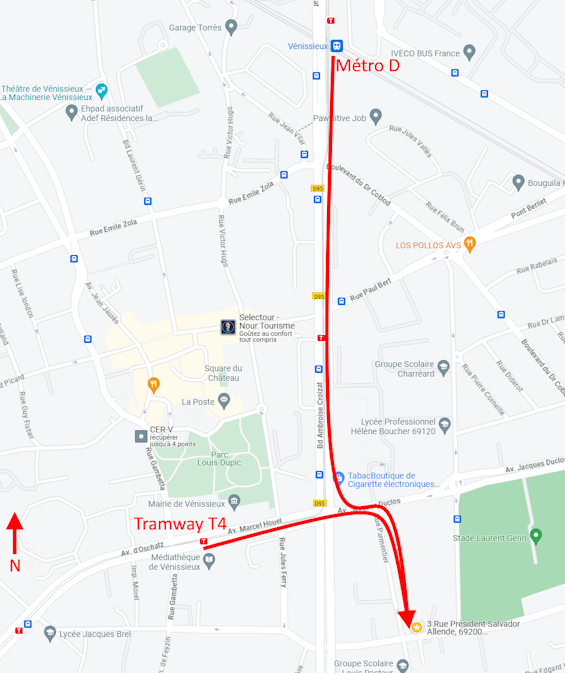

3, rue Président Salvador Allende, 69200
There are 5 different homes at the same address. Mine’s the yellow&pink house, the closest from the start of the street.

Stop at : Marcel Houël - Hôtel de Ville
Then walk for about 7mn, using the Parmentier street.
Stop at the Gare de Vénissieux terminus.
Walk 14mn : Bd Ambroise Croizat, Av. Jacques Duclos, Rue Parmentier.
Lines 39 ,54, 111, 112, 113 and 190 are close.
I have a closed parking, that can fit multiple bikes/scooters, and up to 2 cars. The house is just 10mn away from Lyon.
